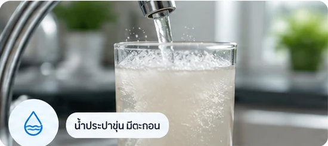
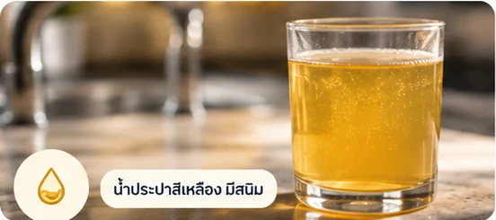
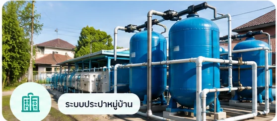

ความรู้เรื่องระบบน้ำ
วิธีเลือกเครื่องกรองน้ำประปาให้เหมาะกับชุมชน
แนวทางเลือกเครื่องกรองน้ำประปาจากแหล่งน้ำ ปริมาณใช้งาน และกำลังผลิต เพื่อให้ระบบทำงานคุ้มค่าและดูแลได้ง่าย
อ่านบทความ →ข้อมูลสำหรับเลือก ออกแบบ และดูแลระบบน้ำให้เหมาะกับการใช้งาน
แนวทางเลือกเครื่องกรองน้ำประปาจากแหล่งน้ำ ปริมาณใช้งาน และกำลังผลิต เพื่อให้ระบบทำงานคุ้มค่าและดูแลได้ง่าย
อ่านบทความ →
เปรียบเทียบระบบกรองน้ำผิวดินและน้ำบาดาล พร้อมปัญหาน้ำที่พบบ่อยและแนวทางเลือกสารกรองให้เหมาะสม
อ่านบทความ →
ทำความเข้าใจแผงโซล่าเซลล์ อินเวอร์เตอร์ และปั๊มน้ำ พร้อมหลักเลือกขนาดระบบสูบน้ำพลังงานแสงอาทิตย์
อ่านบทความ →ส่วนประกอบ ข้อควรคำนวณ และการใช้โซล่าเซลล์ร่วมกับเครื่องกรองน้ำประปา RO และปั๊มน้ำ
อ่านบทความ →
เปรียบเทียบระบบน้ำดื่ม RO ขนาด 12Q และ 24Q จากปริมาณใช้งาน พื้นที่ติดตั้ง และการดูแลรักษา
อ่านบทความ →
เปรียบเทียบหลักการใช้งานปั๊มซับเมอร์สและปั๊มหอยโข่งสำหรับบ่อบาดาล ระบบประปา และงานส่งน้ำ
อ่านบทความ →
เช็กลิสต์ดูแลปั๊ม ถังกรอง ถังเก็บน้ำ และอุปกรณ์ควบคุมของระบบประปาหมู่บ้าน ลดปัญหาน้ำขุ่นและแรงดันตก
อ่านบทความ →น้ำประปามีกลิ่นคลอรีน กลิ่นอับ หรือกลิ่นไข่เน่า ควรตรวจตรงไหน? แนะนำการแยกสาเหตุจากน้ำ ท่อ ถังพัก และเครื่องทำน้ำร้อน ก่อนเลือกระบบกรองให้เหมาะสม
อ่านบทความ →
น้ำประปาขุ่น น้ำมีตะกอน เกิดจากอะไร? เรียนรู้วิธีแยกสาเหตุจากท่อ ถังพัก และระบบกรอง พร้อมข้อควรระวังเรื่องความปลอดภัยของน้ำ
อ่านบทความ →
น้ำประปาสีเหลืองหรือมีคราบสนิม อาจเกิดจากท่อเก่า ตะกอน หรือเหล็กในน้ำ เรียนรู้วิธีตรวจสอบก่อนเลือกสารกรองและระบบบำบัด
อ่านบทความ →
แนวทางตรวจปัญหาน้ำประปาหมู่บ้านขุ่น ตั้งแต่ต้นน้ำ ระบบกรอง ถังพัก ไปจนถึงท่อจ่าย พร้อมสิ่งที่ต้องประเมินก่อนปรับปรุงระบบประปาชุมชน
อ่านบทความ →